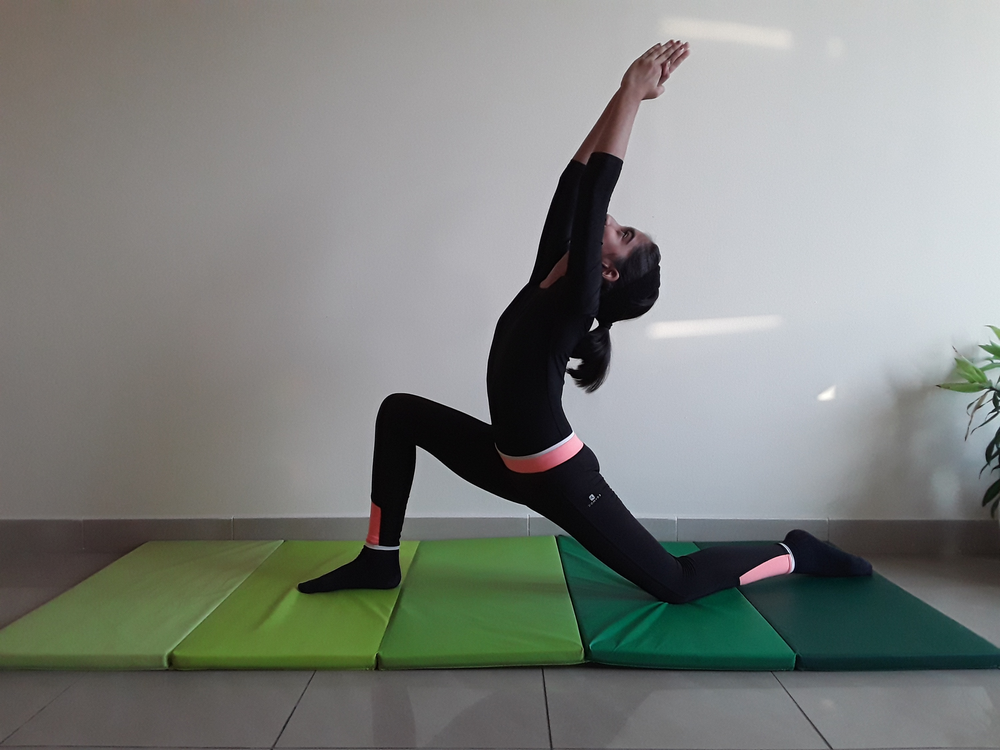

CRESCENT MOON POSE

Steps to perform Crescent Moon Pose
- From a kneeling position, step the right foot forward with the knee bent so that the right thigh is parallel to the floor.
-
Extend through the front of the left leg. Stretch from the hip down to the knee. Extend from the knee to the ankle, then along the front of the foot through to the tips of the toes.
-
Raise both arms above your head, stretching all the way through to the fingers as you lift the chest.
-
The lower back is the part that naturally curves most deeply. Consciously bring the curve of the spine higher up into the middle back as you gracefully extend the arms back overhead and press your chest forward and up.
-
Turn your face to the sky and direct your gaze upward. Stay here for a a few breaths enjoying the crescent shape that you are in.